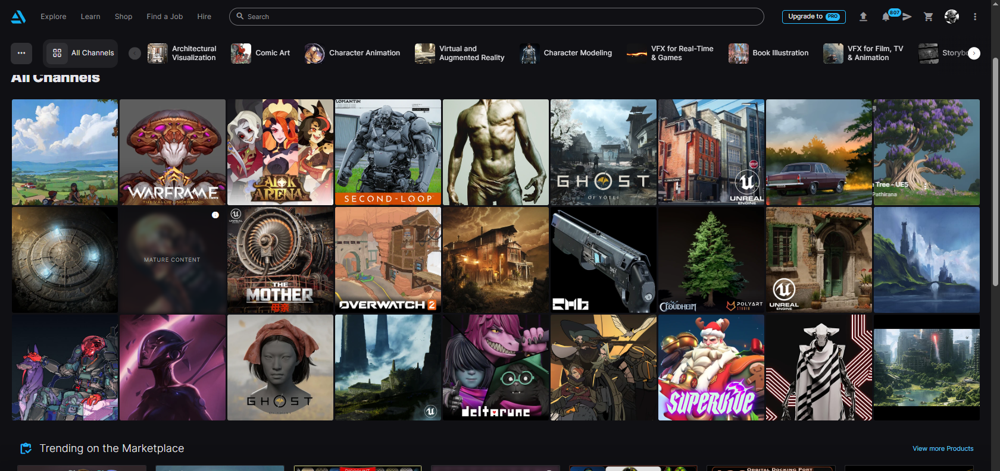

Game ready character model workflow
The step by step of the game industry to make a character 3d model for games, ready to use and implement in projects
1. Softwares required
- Modeling software (Maya, 3ds max, Blender etc..)
-
3d max
-
Blender (free)
- Sculpting software (Zbrush, Mudbox etc..)
-
Zbrush
- Texturing software (Substance painter, Mari etc..)
-
Substance painter
- Game engine (Unreal engine, Unity etc..)
2. knowledge required
- 3d modeling techniques
- Sculpting techniques
- Human anatomy knowledge
- UV unwrapping
- Baking maps (normal, ambient occlusion etc..)
- Texturing techniques
- Rigging and animation basics
- Game engine basics
3. pipeline
- Concept art creation: Start with sketches and designs to visualize the character.

- Base mesh modeling: Create a low-poly base mesh in the modeling software.

- Sculpting details: Use sculpting software to add high-resolution details to the model.

- Retopology: Create a clean, low-poly version of the high-res sculpt for better performance in games.

- UV unwrapping: Lay out the 2D representation of the 3D model for texturing.

- Baking maps: Generate normal maps, ambient occlusion maps, and other texture maps from the high-res model.

- Texturing: Paint textures onto the model using texturing software.

- Rigging: Create a skeleton for the character to enable animation.

- Animation: Create animations for the character (walking, running, idle, etc.).

- Importing into game engine: Bring the final model and animations into the game engine for testing and implementation.
Now that you have a game ready model, how the hell do you build a strong portfolio that makes recruiters choose you over all the other 3d artists over there?
To build a strong, attractive portfolio, focus on showcasing your best work and demonstrating your skills in each stage of the pipeline. Include a variety of projects that highlight different aspects of your abilities, such as character modeling, sculpting, texturing, and animation. Make sure your portfolio is well-organized and easy to navigate. Use high-quality images and videos to showcase your work effectively.
